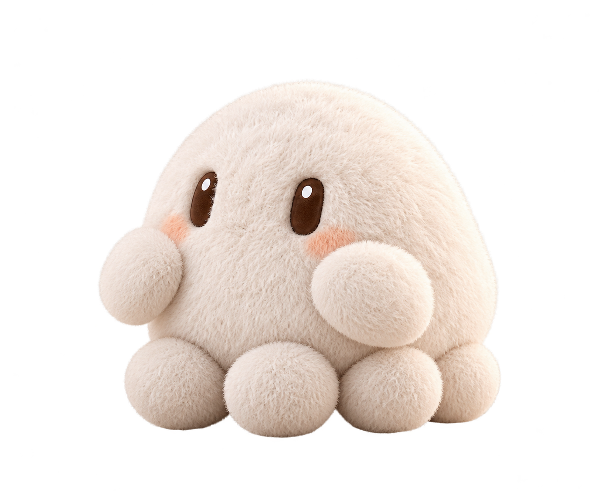
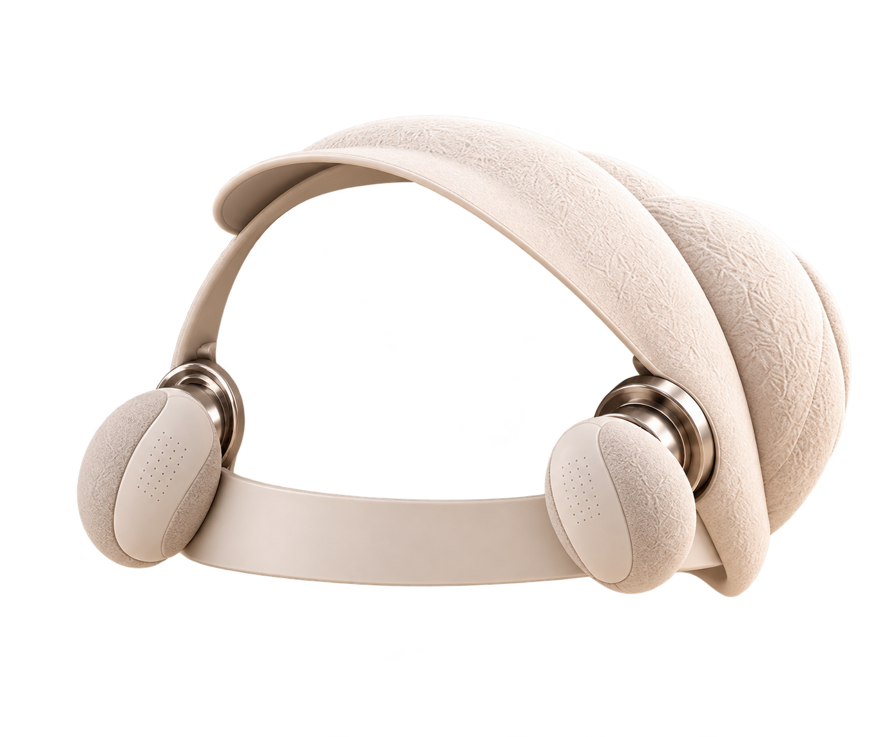

我们的日常 · 本地存档
它也需要，被你照顾。
把世界的声音带给它，让陪伴慢慢发生。
✳柔软的身体
接住每一次温柔
接住每一次温柔
好奇的甲壳
收藏世界的小声音⌁
收藏世界的小声音⌁


正在好奇地听/
两种形态，一起听见世界
2D 毛绒陪伴触摸、声音收藏与情绪回应；无腿部控制。3D 具身探索查看外观、两层上壳与实时物理仿真。
具身探索形态 · 3D正在载入模型…拖动旋转 · 滚轮缩放
正在准备 MuJoCo 场景…
拖动画面转动视角；点击机器人可触摸；Ctrl＋拖动机器人施加外力；拖动上面两片壳可旋转。前进与转向采用交替三足步态。
尚未开始聆听0%
开启后会实时划分声音片段。
切段和模型分析都在本机进行；片段只暂存内存，点击收藏后才保存。不会上传。刚听到的片段
等待声音；有足够活动时会显示切段与判断。
两层上壳 · 独立旋转
分别设置转速与定时停止；实体电机尚未连接。
一只足，三个关节
单独观察水平转向、连杆抬落与足端弯折；下方是可操作的单足结构演示。
“今天，可以带我认识一种新声音吗？”
从一个声音开始，慢慢认识彼此。真实采集 · 最长 60 秒 · 只保存在此浏览器
采集自动切段声学分析人工标注收藏与训练
尚未收藏声音。录音结束后会给出候选片段，可逐段试听、比较和标注。
抚摸毛绒身体，或轻触甲壳，听见它的回应。
模拟睡眠
根据模拟状态调整音量与间隔，不检测真实睡眠。